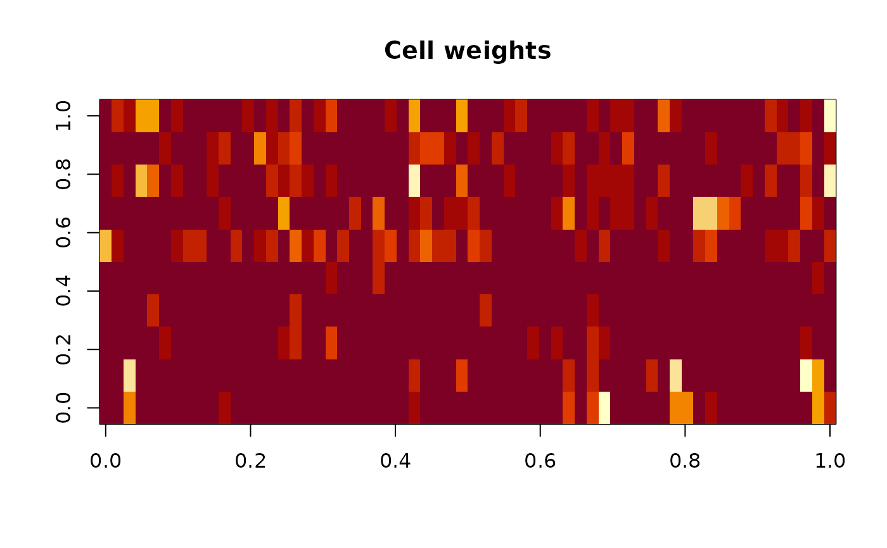

R/imputeCellwise.R
imputeCellIRMI.RdExtends IRMI (Templ, Kowarik, and Filzmoser, 2011) with cellwise contamination handling. Each conditional regression uses a cell-weighted IRWLS engine where per-cell weights in the design matrix downweight contaminated cells without discarding entire observations.
imputeCellIRMI(
data,
method = "tukey",
alpha = NULL,
maxit = 100,
maxit_irwls = 50,
eps = 0.005,
eps_irwls = 1e-06,
uncert = "pmm",
weight_update = "multivariate",
init_weights = "ddc",
hard_threshold = 0.5,
trace = FALSE
)a data.frame with missing values (mixed continuous
and categorical variables are supported).
weight function: "tukey" (default, Tukey bisquare)
or "huber" (Huber).
tuning constant. NULL (default) uses 1.345 for
Huber and 4.685 for Tukey, giving 95% efficiency at the normal model.
maximum number of outer IRMI iterations (default: 100).
maximum number of inner IRWLS iterations per regression (default: 50).
convergence tolerance for the outer loop (default: 5e-3). Convergence is declared when the relative change in imputed values falls below this threshold.
convergence tolerance for the inner IRWLS (default: 1e-6).
imputation uncertainty method: "pmm" (predictive
mean matching, default), "normalerror" (add normal noise), or
"resid" (bootstrap residual).
strategy for updating cell weights between outer
iterations: "multivariate" (default) uses an MCD-based
multivariate update for weight coherence across variables, or
"univariate" updates each variable independently from its
residuals.
method for initialising cell weights, one of
"ddc" (default; DetectDeviatingCells, requires the cellWise
package and falls back to univariate weights when it is unavailable),
"univariate" (per-column median/MAD standardisation), or
"mcd" (minimum covariance determinant on the continuous block).
The default is "ddc" because "mcd" downweights
high-leverage points that carry the regression signal, which can make
imputation worse than unconditional median imputation.
numeric in \([0, 1]\). After convergence, cells with weight below this value are flagged as contaminated (default: 0.5).
logical; if TRUE, print progress information.
A list with components:
the imputed data.frame.
\(n \times p\) matrix of final cell weights (1 = clean, 0 = fully downweighted). Categorical columns always have weight 1.
logical indicating whether the outer loop converged.
number of outer iterations used.
The algorithm works iteratively: in each outer iteration, every variable
with missing values is used as response in a conditional regression on
all remaining variables. For continuous responses, the custom
cellIRWLS() engine fits a weighted regression where each cell in
the design matrix receives its own weight reflecting potential cellwise
contamination. For categorical responses, a weighted multinomial model
is used. After each regression, cell weights for the response variable
are updated from the residuals.
The algorithm proceeds as follows:
Missing values are initialised using initialise.
Initial cell weights are computed with cellWeights() on
all continuous variables in the initialised data.
Outer loop (up to maxit iterations):
For each variable \(j\) with missing values:
Form predictor matrix \(X\) (all other variables) and response \(y\) (variable \(j\)).
If \(j\) is continuous: fit cellIRWLS(X, y,
w_cell, w_response) and impute missing values in \(j\)
using the fitted model plus uncertainty.
If \(j\) is categorical: fit nnet::multinom()
with row weights derived from the cell weight matrix and
impute by sampling from predicted probabilities.
Update cell weights for \(j\) from residuals via
cellWeightsFromResiduals().
Check convergence: relative change in imputed values
falls below eps.
Templ, M., Kowarik, A. and Filzmoser, P. (2011). Iterative stepwise regression imputation using standard and robust methods. Computational Statistics & Data Analysis, 55(10), 2793–2806.
imputeCellM, imputeCellEM,
initialise, irmi
Other imputation methods:
hotdeck(),
impPCA(),
imputeCellEM(),
imputeCellM(),
imputeCellMCD(),
imputeCellwise(),
imputeRobust(),
imputeRobustChain(),
irmi(),
kNN(),
matchImpute(),
medianSamp(),
rangerImpute(),
regressionImp(),
sampleCat(),
vimmi,
vimpute(),
xgboostImpute()
# \donttest{
data(sleep, package = "VIM")
result <- imputeCellIRMI(sleep)
head(result$data_imputed)
#> BodyWgt BrainWgt NonD Dream Sleep Span Gest Pred Exp Danger
#> 1 1.700 5.5 9.1 1.3 10.7 38.6 63 3 2 3
#> 2 1.000 6.6 6.3 2.0 8.3 4.5 42 3 1 3
#> 3 3.385 44.5 8.4 2.1 10.3 14.0 60 1 1 1
#> 4 0.920 5.7 8.6 1.9 10.7 3.9 25 5 2 3
#> 5 1.620 8.1 2.1 1.8 3.9 6.0 19 3 1 4
#> 6 0.425 6.6 9.1 0.7 9.8 27.0 180 4 4 4
image(result$cellweights, main = "Cell weights")

# With Huber weights (less aggressive downweighting)
result2 <- imputeCellIRMI(sleep, method = "huber", trace = TRUE)
#> hard thresholding removed 79 outlying cells (set to NA)
#> --------------------------------------
#> cellIRMI: start of iteration 1
#> imputing variable: 1 ( BodyWgt ) - continuous
#> imputing variable: 2 ( BrainWgt ) - continuous
#> imputing variable: 3 ( NonD ) - continuous
#> imputing variable: 4 ( Dream ) - continuous
#> imputing variable: 5 ( Sleep ) - continuous
#> imputing variable: 6 ( Span ) - continuous
#> imputing variable: 7 ( Gest ) - continuous
#> imputing variable: 9 ( Exp ) - continuous
#> multivariate weight update: flagged cells = 1
#> convergence criterion: 0.551596
#> --------------------------------------
#> cellIRMI: start of iteration 2
#> imputing variable: 1 ( BodyWgt ) - continuous
#> imputing variable: 2 ( BrainWgt ) - continuous
#> imputing variable: 3 ( NonD ) - continuous
#> imputing variable: 4 ( Dream ) - continuous
#> imputing variable: 5 ( Sleep ) - continuous
#> imputing variable: 6 ( Span ) - continuous
#> imputing variable: 7 ( Gest ) - continuous
#> imputing variable: 9 ( Exp ) - continuous
#> multivariate weight update: flagged cells = 1
#> convergence criterion: 0.204784
#> --------------------------------------
#> cellIRMI: start of iteration 3
#> imputing variable: 1 ( BodyWgt ) - continuous
#> imputing variable: 2 ( BrainWgt ) - continuous
#> imputing variable: 3 ( NonD ) - continuous
#> imputing variable: 4 ( Dream ) - continuous
#> imputing variable: 5 ( Sleep ) - continuous
#> imputing variable: 6 ( Span ) - continuous
#> imputing variable: 7 ( Gest ) - continuous
#> imputing variable: 9 ( Exp ) - continuous
#> multivariate weight update: flagged cells = 1
#> convergence criterion: 0.012886
#> --------------------------------------
#> cellIRMI: start of iteration 4
#> imputing variable: 1 ( BodyWgt ) - continuous
#> imputing variable: 2 ( BrainWgt ) - continuous
#> imputing variable: 3 ( NonD ) - continuous
#> imputing variable: 4 ( Dream ) - continuous
#> imputing variable: 5 ( Sleep ) - continuous
#> imputing variable: 6 ( Span ) - continuous
#> imputing variable: 7 ( Gest ) - continuous
#> imputing variable: 9 ( Exp ) - continuous
#> multivariate weight update: flagged cells = 1
#> convergence criterion: 0.004593
#> cellIRMI converged.
# Mixed data example
data(testdata)
result3 <- imputeCellIRMI(testdata$wna)
# }